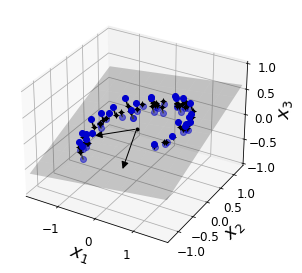
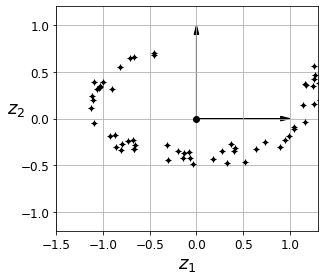
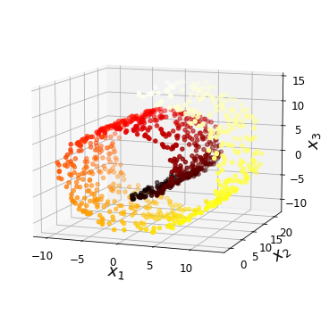
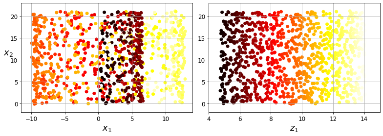
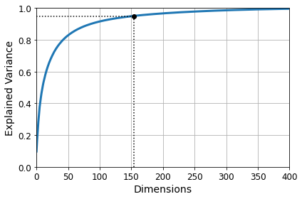
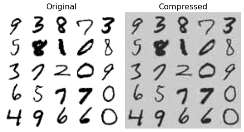
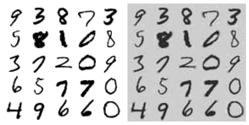
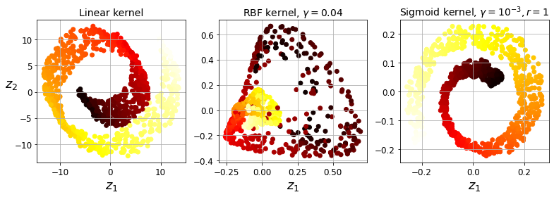
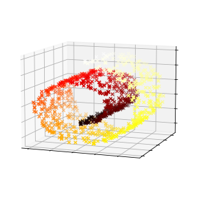
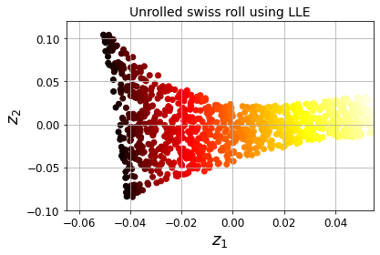

Dimensionality Reduction#
All credits to Aurelien Geron, adapted from his book “Hands-on Machine Learning”
Setup#
First, let’s make sure this notebook works well in both python 2 and 3, import a few common modules, ensure MatplotLib plots figures inline and prepare a function to save the figures:
# To support both python 2 and python 3
from __future__ import division, print_function, unicode_literals
# Common imports
import numpy as np
import os
# to make this notebook's output stable across runs
np.random.seed(42)
# To plot pretty figures
%matplotlib inline
import matplotlib as mpl
import matplotlib.pyplot as plt
mpl.rc('axes', labelsize=14)
mpl.rc('xtick', labelsize=12)
mpl.rc('ytick', labelsize=12)
# Where to save the figures
def image_path(fig_id):
return "images/"+fig_id
def save_fig(fig_id, tight_layout=True):
print("Saving figure", fig_id)
if tight_layout:
plt.tight_layout()
plt.savefig(image_path(fig_id) + ".png", format='png', dpi=300)
# Ignore useless warnings (see SciPy issue #5998)
import warnings
warnings.filterwarnings(action="ignore", message="^internal gelsd")
Projection methods#
Build 3D dataset:
np.random.seed(4)
m = 60
w1, w2 = 0.1, 0.3
noise = 0.1
angles = np.random.rand(m) * 3 * np.pi / 2 - 0.5
X = np.empty((m, 3))
X[:, 0] = np.cos(angles) + np.sin(angles)/2 + noise * np.random.randn(m) / 2
X[:, 1] = np.sin(angles) * 0.7 + noise * np.random.randn(m) / 2
X[:, 2] = X[:, 0] * w1 + X[:, 1] * w2 + noise * np.random.randn(m)
PCA using Scikit-Learn#
With Scikit-Learn, PCA is really trivial. It even takes care of mean centering for you (needed for PCA!!):
from sklearn.decomposition import PCA
pca = PCA(n_components = 2)
X2D = pca.fit_transform(X)
X2D[:5]
array([[ 1.26203346, 0.42067648],
[-0.08001485, -0.35272239],
[ 1.17545763, 0.36085729],
[ 0.89305601, -0.30862856],
[ 0.73016287, -0.25404049]])
Recover the 3D points projected on the plane (PCA 2D subspace).
X3D_inv = pca.inverse_transform(X2D)
Of course, there was some loss of information during the projection step, so the recovered 3D points are not exactly equal to the original 3D points:
np.allclose(X3D_inv, X)
False
We can compute the reconstruction error:
np.mean(np.sum(np.square(X3D_inv - X), axis=1))
0.01017033779284855
The PCA object gives access to the principal components that it computed:
pca.components_
array([[-0.93636116, -0.29854881, -0.18465208],
[ 0.34027485, -0.90119108, -0.2684542 ]])
Now let’s look at the explained variance ratio:
pca.explained_variance_ratio_
array([0.84248607, 0.14631839])
The first dimension explains 84.2% of the variance, while the second explains 14.6%.
By projecting down to 2D, we lost about 1.1% of the variance:
1 - pca.explained_variance_ratio_.sum()
0.011195535570688975
Next, let’s generate some nice figures! :)
Utility class to draw 3D arrows (copied from http://stackoverflow.com/questions/11140163)
from matplotlib.patches import FancyArrowPatch
from mpl_toolkits.mplot3d import proj3d
class Arrow3D(FancyArrowPatch):
def __init__(self, xs, ys, zs, *args, **kwargs):
FancyArrowPatch.__init__(self, (0,0), (0,0), *args, **kwargs)
self._verts3d = xs, ys, zs
def draw(self, renderer):
xs3d, ys3d, zs3d = self._verts3d
xs, ys, zs = proj3d.proj_transform(xs3d, ys3d, zs3d, renderer.M)
self.set_positions((xs[0],ys[0]),(xs[1],ys[1]))
FancyArrowPatch.draw(self, renderer)
Express the plane as a function of x and y.
axes = [-1.8, 1.8, -1.3, 1.3, -1.0, 1.0]
x1s = np.linspace(axes[0], axes[1], 10)
x2s = np.linspace(axes[2], axes[3], 10)
x1, x2 = np.meshgrid(x1s, x2s)
C = pca.components_
R = C.T.dot(C)
z = (R[0, 2] * x1 + R[1, 2] * x2) / (1 - R[2, 2])
Plot the 3D dataset, the plane and the projections on that plane.
from mpl_toolkits.mplot3d import Axes3D
fig = plt.figure(figsize=(6, 3.8))
ax = fig.add_subplot(111, projection='3d')
## plot the original dataset, including the inverse space
X3D_above = X[X[:, 2] > X3D_inv[:, 2]]
X3D_below = X[X[:, 2] <= X3D_inv[:, 2]]
ax.plot(X3D_below[:, 0], X3D_below[:, 1], X3D_below[:, 2], "bo", alpha=0.5)
ax.plot_surface(x1, x2, z, alpha=0.2, color="k")
np.linalg.norm(C, axis=0)
ax.add_artist(Arrow3D([0, C[0, 0]],[0, C[0, 1]],[0, C[0, 2]], mutation_scale=15, lw=1, arrowstyle="-|>", color="k"))
ax.add_artist(Arrow3D([0, C[1, 0]],[0, C[1, 1]],[0, C[1, 2]], mutation_scale=15, lw=1, arrowstyle="-|>", color="k"))
ax.plot([0], [0], [0], "k.")
for i in range(m):
if X[i, 2] > X3D_inv[i, 2]:
ax.plot([X[i][0], X3D_inv[i][0]], [X[i][1], X3D_inv[i][1]], [X[i][2], X3D_inv[i][2]], "k-")
else:
ax.plot([X[i][0], X3D_inv[i][0]], [X[i][1], X3D_inv[i][1]], [X[i][2], X3D_inv[i][2]], "k-", color="#505050")
ax.plot(X3D_inv[:, 0], X3D_inv[:, 1], X3D_inv[:, 2], "k+")
ax.plot(X3D_inv[:, 0], X3D_inv[:, 1], X3D_inv[:, 2], "k.")
ax.plot(X3D_above[:, 0], X3D_above[:, 1], X3D_above[:, 2], "bo")
ax.set_xlabel("$x_1$", fontsize=18)
ax.set_ylabel("$x_2$", fontsize=18)
ax.set_zlabel("$x_3$", fontsize=18)
ax.set_xlim(axes[0:2])
ax.set_ylim(axes[2:4])
ax.set_zlim(axes[4:6])
# Note: If you are using Matplotlib 3.0.0, it has a bug and does not
# display 3D graphs properly.
# See https://github.com/matplotlib/matplotlib/issues/12239
# You should upgrade to a later version. If you cannot, then you can
# use the following workaround before displaying each 3D graph:
# for spine in ax.spines.values():
# spine.set_visible(False)
save_fig("dataset_3d_plot")
plt.show()
/Users/Xabier/jupyter/lib/python3.7/site-packages/ipykernel_launcher.py:22: UserWarning: color is redundantly defined by the 'color' keyword argument and the fmt string "k-" (-> color='k'). The keyword argument will take precedence.
Saving figure dataset_3d_plot
/Users/Xabier/jupyter/lib/python3.7/site-packages/ipykernel_launcher.py:11: MatplotlibDeprecationWarning:
The M attribute was deprecated in Matplotlib 3.4 and will be removed two minor releases later. Use self.axes.M instead.
# This is added back by InteractiveShellApp.init_path()

fig = plt.figure()
ax = fig.add_subplot(111, aspect='equal')
## here plot the reduced dataset!!
ax.plot(X2D[:, 0], X2D[:, 1], "k+")
ax.plot(X2D[:, 0], X2D[:, 1], "k.")
ax.plot([0], [0], "ko")
ax.arrow(0, 0, 0, 1, head_width=0.05, length_includes_head=True, head_length=0.1, fc='k', ec='k')
ax.arrow(0, 0, 1, 0, head_width=0.05, length_includes_head=True, head_length=0.1, fc='k', ec='k')
ax.set_xlabel("$z_1$", fontsize=18)
ax.set_ylabel("$z_2$", fontsize=18, rotation=0)
ax.axis([-1.5, 1.3, -1.2, 1.2])
ax.grid(True)
save_fig("dataset_2d_plot")
Saving figure dataset_2d_plot

Manifold learning#
Swiss roll. Apart from the positions, make_swiss_rolll returns t, the univariate position of the sample according to the main dimension of the points in the manifold.
from sklearn.datasets import make_swiss_roll
X, t = make_swiss_roll(n_samples=1000, noise=0.2, random_state=42)
axes = [-11.5, 14, -2, 23, -12, 15]
fig = plt.figure(figsize=(6, 5))
ax = fig.add_subplot(111, projection='3d')
ax.scatter(X[:, 0], X[:, 1], X[:, 2], c=t, cmap=plt.cm.hot)
ax.view_init(10, -70)
ax.set_xlabel("$x_1$", fontsize=18)
ax.set_ylabel("$x_2$", fontsize=18)
ax.set_zlabel("$x_3$", fontsize=18)
ax.set_xlim(axes[0:2])
ax.set_ylim(axes[2:4])
ax.set_zlim(axes[4:6])
save_fig("swiss_roll_plot")
plt.show()
Saving figure swiss_roll_plot

plt.figure(figsize=(11, 4))
## c here is sequence of colors!
plt.subplot(121)
plt.scatter(X[:, 0], X[:, 1], c=t, cmap=plt.cm.hot)
plt.axis(axes[:4])
plt.xlabel("$x_1$", fontsize=18)
plt.ylabel("$x_2$", fontsize=18, rotation=0)
plt.grid(True)
plt.subplot(122)
plt.scatter(t, X[:, 1], c=t, cmap=plt.cm.hot)
plt.axis([4, 15, axes[2], axes[3]])
plt.xlabel("$z_1$", fontsize=18)
plt.grid(True)
save_fig("squished_swiss_roll_plot")
plt.show()
Saving figure squished_swiss_roll_plot

PCA#
MNIST compression#
from six.moves import urllib
try:
from sklearn.datasets import fetch_openml
mnist = fetch_openml('mnist_784', version=1)
mnist.target = mnist.target.astype(np.int64)
except ImportError:
from sklearn.datasets import fetch_mldata
mnist = fetch_mldata('MNIST original')
from sklearn.model_selection import train_test_split
X = mnist["data"]
y = mnist["target"]
X_train, X_test, y_train, y_test = train_test_split(X, y)
Now, out of the 28\(\times\)28 dimensions, check those accounting for the 95% of the variance ratio
pca = PCA()
pca.fit(X_train)
cumsum = np.cumsum(pca.explained_variance_ratio_)
d = np.argmax(cumsum >= 0.95) + 1
d ## reduced from 784!!
154
plt.figure(figsize=(6,4))
plt.plot(cumsum, linewidth=3)
plt.axis([0, 400, 0, 1])
plt.xlabel("Dimensions")
plt.ylabel("Explained Variance")
plt.plot([d, d], [0, 0.95], "k:")
plt.plot([0, d], [0.95, 0.95], "k:")
plt.plot(d, 0.95, "ko")
plt.grid(True)
save_fig("explained_variance_plot")
plt.show()
Saving figure explained_variance_plot

Now redo the PCA just with the 154 dimensions account for 95% of the variance
pca = PCA(n_components=0.95)
X_reduced = pca.fit_transform(X_train)
pca.n_components_
154
np.sum(pca.explained_variance_ratio_)
0.9503684424557433
pca = PCA(n_components = 154)
X_reduced = pca.fit_transform(X_train)
X_recovered = pca.inverse_transform(X_reduced) ## inverse transform!!
# EXTRA
def plot_digits(instances, images_per_row=5, **options):
size = 28
images_per_row = min(len(instances), images_per_row)
# This is equivalent to n_rows = ceil(len(instances) / images_per_row):
n_rows = (len(instances) - 1) // images_per_row + 1
# Append empty images to fill the end of the grid, if needed:
n_empty = n_rows * images_per_row - len(instances)
padded_instances = np.concatenate([instances, np.zeros((n_empty, size * size))], axis=0)
# Reshape the array so it's organized as a grid containing 28×28 images:
image_grid = padded_instances.reshape((n_rows, images_per_row, size, size))
# Combine axes 0 and 2 (vertical image grid axis, and vertical image axis),
# and axes 1 and 3 (horizontal axes). We first need to move the axes that we
# want to combine next to each other, using transpose(), and only then we
# can reshape:
big_image = image_grid.transpose(0, 2, 1, 3).reshape(n_rows * size,
images_per_row * size)
# Now that we have a big image, we just need to show it:
plt.imshow(big_image, cmap = mpl.cm.binary, **options)
plt.axis("off")
plt.figure(figsize=(7, 4))
plt.subplot(121)
plot_digits(X_train[::2100])
plt.title("Original", fontsize=16)
plt.subplot(122)
plot_digits(X_recovered[::2100])
plt.title("Compressed", fontsize=16)
save_fig("mnist_compression_plot")
Saving figure mnist_compression_plot

X_reduced_pca = X_reduced
Incremental PCA#
from sklearn.decomposition import IncrementalPCA ## does not requiring loading in memory the whole dataset!
n_batches = 100
inc_pca = IncrementalPCA(n_components=154)
for X_batch in np.array_split(X_train, n_batches):
print(".", end="") # not shown in the book
inc_pca.partial_fit(X_batch)
X_reduced = inc_pca.transform(X_train)
....................................................................................................
X_recovered_inc_pca = inc_pca.inverse_transform(X_reduced)
plt.figure(figsize=(7, 4))
plt.subplot(121)
plot_digits(X_train[::2100])
plt.subplot(122)
plot_digits(X_recovered_inc_pca[::2100])
plt.tight_layout()

X_reduced_inc_pca = X_reduced
Let’s compare the results of transforming MNIST using regular PCA and incremental PCA. First, the means are equal:
np.allclose(pca.mean_, inc_pca.mean_)
True
But the results are not exactly identical. Incremental PCA gives a very good approximate solution, but it’s not perfect:
np.allclose(X_reduced_pca, X_reduced_inc_pca)
False
Kernel PCA#
X, t = make_swiss_roll(n_samples=1000, noise=0.2, random_state=42)
from sklearn.decomposition import KernelPCA
rbf_pca = KernelPCA(n_components = 2, kernel="rbf", gamma=0.04)
X_reduced = rbf_pca.fit_transform(X)
from sklearn.decomposition import KernelPCA
## note fit_inverse_transform = True
lin_pca = KernelPCA(n_components = 2, kernel="linear", fit_inverse_transform=True)
rbf_pca = KernelPCA(n_components = 2, kernel="rbf", gamma=0.0433, fit_inverse_transform=True)
sig_pca = KernelPCA(n_components = 2, kernel="sigmoid", gamma=0.001, coef0=1, fit_inverse_transform=True)
y = t > 6.9
plt.figure(figsize=(11, 4))
for subplot, pca, title in ((131, lin_pca, "Linear kernel"), (132, rbf_pca, "RBF kernel, $\gamma=0.04$"), (133, sig_pca, "Sigmoid kernel, $\gamma=10^{-3}, r=1$")):
X_reduced = pca.fit_transform(X)
if subplot == 132:
X_reduced_rbf = X_reduced
plt.subplot(subplot)
#plt.plot(X_reduced[y, 0], X_reduced[y, 1], "gs")
#plt.plot(X_reduced[~y, 0], X_reduced[~y, 1], "y^")
plt.title(title, fontsize=14)
plt.scatter(X_reduced[:, 0], X_reduced[:, 1], c=t, cmap=plt.cm.hot)
plt.xlabel("$z_1$", fontsize=18)
if subplot == 131:
plt.ylabel("$z_2$", fontsize=18, rotation=0)
plt.grid(True)
save_fig("kernel_pca_plot")
plt.show()
Saving figure kernel_pca_plot

The inverse_transform function actually trains a regressor to map the instances before and after the Kernel PCA. It then uses it for any other instance (note fit_inverse_transform = True above)
plt.figure(figsize=(6, 5))
X_inverse = rbf_pca.inverse_transform(X_reduced_rbf)
ax = plt.subplot(111, projection='3d')
ax.view_init(10, -70)
ax.scatter(X_inverse[:, 0], X_inverse[:, 1], X_inverse[:, 2], c=t, cmap=plt.cm.hot, marker="x")
ax.set_xlabel("")
ax.set_ylabel("")
ax.set_zlabel("")
ax.set_xticklabels([])
ax.set_yticklabels([])
ax.set_zticklabels([])
save_fig("preimage_plot", tight_layout=False)
plt.show()
Saving figure preimage_plot

Here we describe how to fine tune the hyperparameters. In this case, we build a Pipeline, building a combination of KernelPCA and a simple logistic regression
from sklearn.model_selection import GridSearchCV
from sklearn.linear_model import LogisticRegression
from sklearn.pipeline import Pipeline
clf = Pipeline([
("kpca", KernelPCA(n_components=2)),
("log_reg", LogisticRegression(solver="liblinear"))
])
param_grid = [{
"kpca__gamma": np.linspace(0.03, 0.05, 10),
"kpca__kernel": ["rbf", "sigmoid"]
}]
grid_search = GridSearchCV(clf, param_grid, cv=3)
grid_search.fit(X, y)
GridSearchCV(cv=3,
estimator=Pipeline(steps=[('kpca', KernelPCA(n_components=2)),
('log_reg',
LogisticRegression(solver='liblinear'))]),
param_grid=[{'kpca__gamma': array([0.03 , 0.03222222, 0.03444444, 0.03666667, 0.03888889,
0.04111111, 0.04333333, 0.04555556, 0.04777778, 0.05 ]),
'kpca__kernel': ['rbf', 'sigmoid']}])
print(grid_search.best_params_)
{'kpca__gamma': 0.043333333333333335, 'kpca__kernel': 'rbf'}
rbf_pca = KernelPCA(n_components = 2, kernel="rbf", gamma=0.0433,
fit_inverse_transform=True)
X_reduced = rbf_pca.fit_transform(X)
X_preimage = rbf_pca.inverse_transform(X_reduced)
from sklearn.metrics import mean_squared_error
mean_squared_error(X, X_preimage)
1.4380921591811786e-26
LLE#
X, t = make_swiss_roll(n_samples=1000, noise=0.2, random_state=41)
from sklearn.manifold import LocallyLinearEmbedding
lle = LocallyLinearEmbedding(n_components=2, n_neighbors=10, random_state=42)
X_reduced = lle.fit_transform(X)
plt.title("Unrolled swiss roll using LLE", fontsize=14)
plt.scatter(X_reduced[:, 0], X_reduced[:, 1], c=t, cmap=plt.cm.hot)
plt.xlabel("$z_1$", fontsize=18)
plt.ylabel("$z_2$", fontsize=18)
plt.axis([-0.065, 0.055, -0.1, 0.12])
plt.grid(True)
save_fig("lle_unrolling_plot")
plt.show()
Saving figure lle_unrolling_plot
